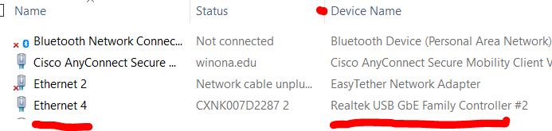
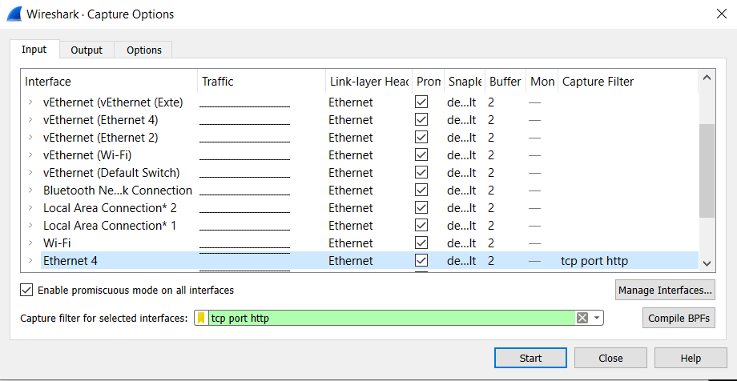
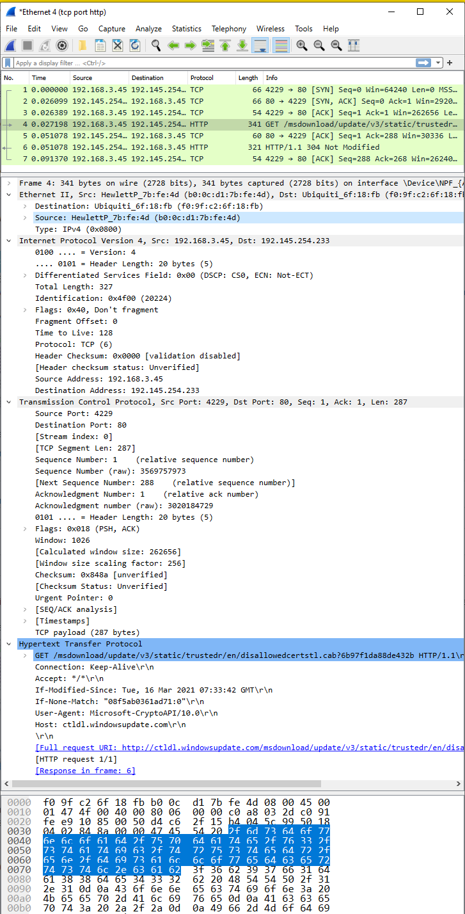
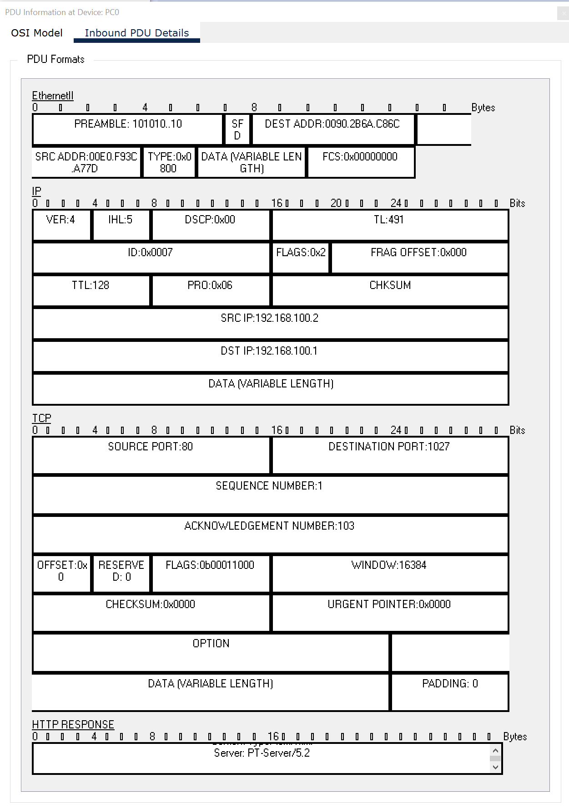

Use the course chatbot and the references provided to answer the following questions and solve the following problems.
Network protocols ensure reliable and efficient data transmission across a wide assortment of global networks. Investigate the history of this development. Consult LinkedIn Learning and Wikipedia, among other available resources, as you reflect on and answer questions in this assignment. reference: Wikipedia! Internet protocol suite
(50) 1. What organization or person(s) is/are primarily responsible for the architecture of the Internet?
Using your laptop, in the Somsen 301 lab, connect to the HP-USB-C dock.
Look for the Ethernet connection with a device name that contains 'Realtek USB GbE Family Controller'. It may not be Ethernet 0. 
Write the TCP/IP model layer for each item listed in the spaces below.
Note there are two LED indicator lights on the network port. These lights typically indicate data activity (left light) and port speed (right light). The color of these lights (green, amber, off/none) can vary between manufacturers.
(50) 2. What TCP/IP Layer does the NIC operate in?: (50) 3. What TCP/IP Layer does the Client for Microsoft Networks operate in?: (50) 4. What TCP/IP Layer does File and Printer Sharing operate in?: (50) 5. What TCP/IP Layer does Internet Protocol Version 4 operate in?:
DO NOT set a static IP address on your laptop. That will cause you problems on the school network. Research the relation between the following items: IP address, subnet mask, default gateway, and preferred DNS server, all of which are important concepts for the remainder of this course. Remember you can find these values on a Windows computer by opening up a command prompt and typing in ipconfig/all
ipconfig/all
Below is the result for a Windows computer on a wired network.
Ethernet adapter Ethernet 4: Connection-specific DNS Suffix . : HomeNet Description . . . . . . . . . . . : Realtek USB GbE Family Controller #2 Physical Address. . . . . . . . . : B0-0C-D1-7B-FE-4D DHCP Enabled. . . . . . . . . . . : Yes Autoconfiguration Enabled . . . . : Yes IPv4 Address. . . . . . . . . . . : 192.168.3.45(Preferred) Subnet Mask . . . . . . . . . . . : 255.255.255.0 Lease Obtained. . . . . . . . . . : Wednesday, July 28, 2021 8:48:25 AM Lease Expires . . . . . . . . . . : Friday, July 30, 2021 8:48:35 AM Default Gateway . . . . . . . . . : 192.168.3.1 DHCP Server . . . . . . . . . . . : 192.168.3.1 DNS Servers . . . . . . . . . . . : 192.168.3.1 NetBIOS over Tcpip. . . . . . . . : Enabled Connection-specific DNS Suffix Search List : HomeNet
Examine the details of an Ethernet frame, preferably in Somsen 301 during class. You can work with a partner. You can also attempt this in another location, as long as you have permission. Make sure to use your WSU laptop because you have administrator access. Start WireShark, follow the instructions, and enter your answers to the questions in the spaces below.
Make sure to select the WireShark Interface that corresponds to the Realtek USB GbE Family Controller, which is the wired connection provided by the USB-C dock.  Your values will be different.  Your values will be different.
(50) 6. Examine the data portion of the frame and write which layer of the TCP/IP model the HTTP protocol represents.
(100) 7. Use the Snipping Tool to make a screenshot of your WireShark application, showing the IP, frame and data windows, similar to the screenshot above. Note that your IP addresses and information will be different. Save the screenshot as "Ex1" in your ' ' folder. You will be combining screenshots from several exercises at the end of this assignment, just as you did in Formative00-PDF File Creation.
Learn how to use DNS tools ipconfig and nslookup, preferably in Somsen 301 during class. You can work with a partner. You can also attempt this in another location, as long as you have permission. Make sure to use your WSU laptop because you have administrator access.
ipconfig
nslookup
Do not modify your computer hosts file.
hosts
(50) 8. Copy the first uncommented (no # as the first line character) line of your hosts file and paste it below.
Open a command prompt on your computer. After typing nslookup and www.yahoo.com the message 'Non-existent domain' will appear. Ignore it. Pay attention to the Name: value returned for www.microsoft.com when you perform a nslookup
www.yahoo.com
(50) 9. Copy and paste the Name: value of www.microsoft.com below.
Learn how to work with DHCP clients using ipconfig, preferably in Somsen 301 during class. You can work with a partner. You can also attempt this in another location, as long as you have permission. Make sure to use your WSU laptop because you have administrator access.
Your computer may have a different connection than Ethernet0. The box 'Obtain an IP address automatically' should already be checked. Answer the question below.
Record the ip address of the 'Realtek USB GbE Family Controller' - which is the USB-C dock in Somsen 301. In a command prompt, after running the command ipconfig /renew again note the ip address of the Controller. (50) 10. After running the ip renew command did the Controller ip address change?
ipconfig /renew
ip renew
Learn how to work with the Internnetwork layer using Wireshark, preferably in Somsen 301 during class. You can work with a partner. You can also attempt this in another location, as long as you have permission. Make sure to use your WSU laptop because you have administrator access.
Remember to select the proper interface. You may have a different connection than Ethernet0. Record the Version, Time to Live, Protocol and Checksum values below.
(100) 11. Record values below:
Learn to work with Wireshark to capture 'tracert' packets, preferably in Somsen 301 during class. You can work with a partner. You can also attempt this in another location, as long as you have permission. Make sure to use your WSU laptop because you have administrator access.
Remember to select the proper interface. You may have a different connection than Ethernet0. Pay special attention to the TTL pattern. The Command Prompt window will display a table, with a row for each hop. You can see the TTL pattern in the WireShark capture window.
(100) 12. Record the IP address for https://www.winona.edu Examine both the Windows command prompt window and the WireShark data capture window.
https://www.winona.edu
Learn the purpose of the arp cache, preferably in Somsen 301 during class. You can work with a partner. You can also attempt this in another location, as long as you have permission. Make sure to use your WSU laptop because you have administrator access.
Open a command prompt. In your network settings 'Obtain an IP address automatically' should already be checked. Answer the question below.
You may encounter a 'Request timed out.' message. If so, try pinging www.winona.edu or www.cnn.com. Write the ip address for the website you pinged in the space below. Note: this exercise may not work on your computer, in that case enter 'not working'.
(50) 13. www.xxx.com ip address?
Use the netstat program to view IP protocol status and statistics, preferably in Somsen 301 during class. You can work with a partner. You can also attempt this in another location, as long as you have permission. Make sure to use your WSU laptop because you have administrator access.
netstat
Open a command prompt and explore the use of the netstat command.
Make a screenshot of at least the first 6 lines of the IPv4 Route Table.
(100) 14. Use the Snipping Tool to make a screenshot of the command prompt Route Table. Save the screenshot as "Ex2" in your ' ' folder. You will be combining screenshots from several exercises at the end of this assignment, just as you did in Formative00-PDF File Creation.
Examine the NIC properties on your laptop, preferably in Somsen 301 during class. You can work with a partner. You can also attempt this in another location, as long as you have permission. Make sure to use your WSU laptop because you have administrator access.
Open a command prompt window. Remember that your connection may be different than Ethernet0. Record your MAC/physical address below.
(50) 15. MAC/physical address?
Browse to www.coffer.com/mac_find to lookup the MAC/physical address vendor. Write your answer below.
(50) 16. MAC address vendor?
Use Packet Tracer to learn how to identify the TCP/IP layers in an HTTP packet. When done, answer the questions below. For background information please refer to the chatbot.

(50) 17. What layer of TCP/IP model does the EthernetII section represent?
(50) 18. What layer of TCP/IP model does the IP section represent?
(50) 19. What layer of TCP/IP model does the TCP section represent?
(50) 20. What layer of TCP/IP model does the HTTP section represent?
Use a web browser to verify that you have published your website to https://classes.winona.edu/... Check that your name, StarID, email, class, semester, section and all of your answers are correct and visible. From the menu choose File>Print... and using "Microsoft Print to PDF" save a copy of this assignment as a .pdf file in your ' ' folder.
(50) 21. Save your file 'WebPage.pdf' to the ' ' folder.
Create one .pdf (portable document format) file from the screenshots that you have taken by following these steps.
(50) 22. Save your file 'ScreenShots.pdf' in your ' ' folder.
Use PDFill to merge the WebPage.pdf file with the ScreenShots.pdf file, and save it as 'Summative05.pdf' in your ' ' folder.
(50) 23. Upload your file 'Summative05.pdf' to the D2L 'Summative05' Assignment folder.
Use a browser to view your completed and published website at: https://classes.winona.edu/... Ensure that you have linked this assignment on your home page. Note that your screenshots do not have to be completed to perform this step.